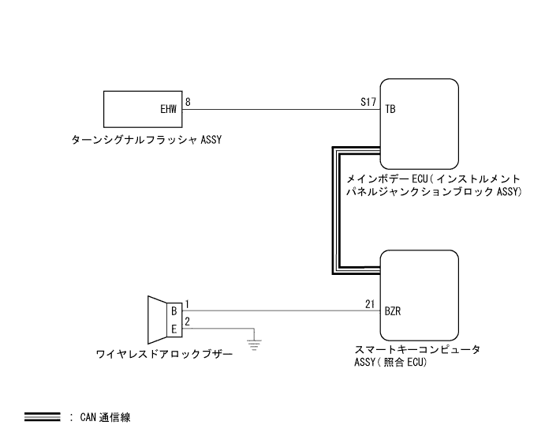
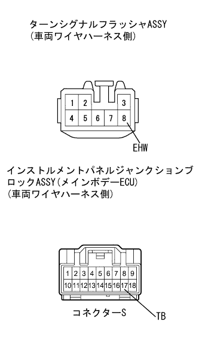
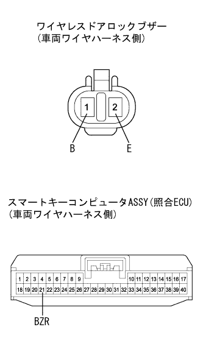

Wireless Door Lock Control System No Answer-back (Hazard + Buzzer) |

| Step 1 | Check Customize Settings |
Using SST (TaSCAN), check that the customize data "Operation Confirmation Buzzer (Answer-back Buzzer)" is set to "ON".
|
| ||||
| OK | |
| Step 2 | Check Wireless Door Lock Operation |
Check whether lock/unlock operates by wireless operation.
|
| ||||
| OK | |
| Step 3 | Inspect Answer-back |
Check which answer-back function does not operate.
| Result | Proceed to |
|---|---|
| Hazard warning lights do not operate | A |
| Buzzer does not operate | B |
|
| ||||
| A | |
| Step 4 | Check Hazard Warning Light Output |
Check that the turn signal lights blink when the hazard switch is pressed.
|
| ||||
| OK | |
| Step 5 | Perform TaSCAN Active Test |
Active Test
Using SST (TaSCAN), perform the Active Test to check that the hazard warning lights operate.
| Item | Drive |
|---|---|
| Hazard | ON/OFF |
|
| ||||
| OK | ||
| ||
| Step 6 | Inspect Wire Harness and Connector (Turn Signal Flasher Assembly - Main Body ECU (Instrument Panel Junction Block Assembly)) |
 |
Disconnect the turn signal flasher assembly connector and connector S of the instrument panel junction block assembly (main body ECU).
Using SST (Toyota electrical tester), measure the resistance between each terminal of the vehicle side connectors.
| Inspection terminal (flasher - main body ECU) | Condition | Standard |
|---|---|---|
| 8(EHW) - S17(TB) | Always | Below 1 Ω |
| 8 (EHW) - Body ground | Always | 10k Ω or higher |
|
| ||||
| OK | ||
| ||
| Step 7 | Perform TaSCAN Active Test |
Active Test
Using SST (TaSCAN), perform the Active Test to check that the buzzer can sound.
| Item | Drive |
|---|---|
| Wireless buzzer (lock) | Sound/stop |
|
| ||||
| OK | ||
| ||
| Step 8 | Inspect Wire Harness and Connector (Wireless Door Lock Buzzer - Certification ECU) |
 |
Disconnect the wireless door lock buzzer and certification ECU connectors.
Using SST (Toyota electrical tester), measure the resistance between each terminal of the vehicle side connectors.
| Inspection terminal (buzzer ←→ certification ECU) | Condition | Standard |
|---|---|---|
| 1(B) - 21(BZR) | Always | Below 1 Ω |
| Terminal No. (buzzer - body ground) | Condition | Standard |
|---|---|---|
| 2 (E) - Body ground | Always | Below 1 Ω |
|
| ||||
| OK | |
| Step 9 | Inspect Wireless Door Lock Buzzer |
Replace the wireless door lock buzzer with a new or known good one and perform an operation check.
|
| ||||
| OK | ||
| ||